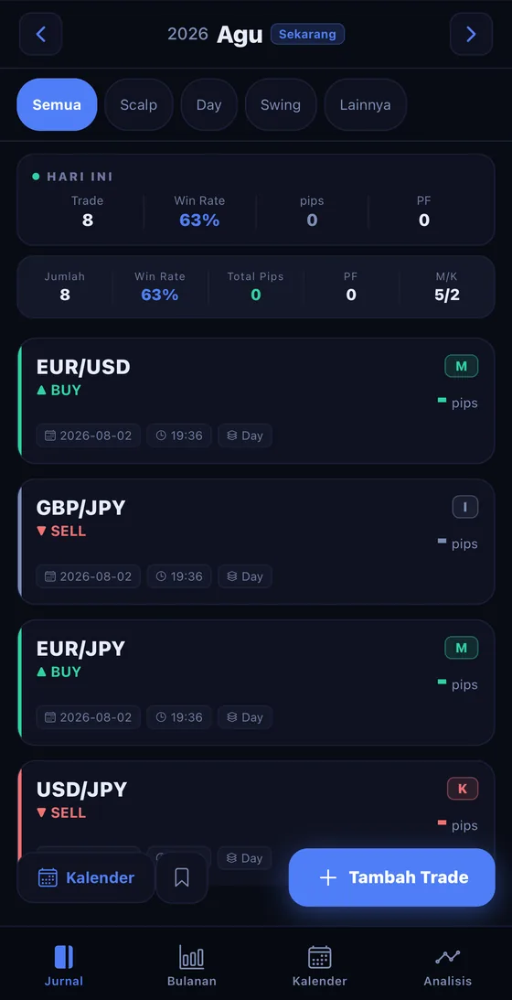
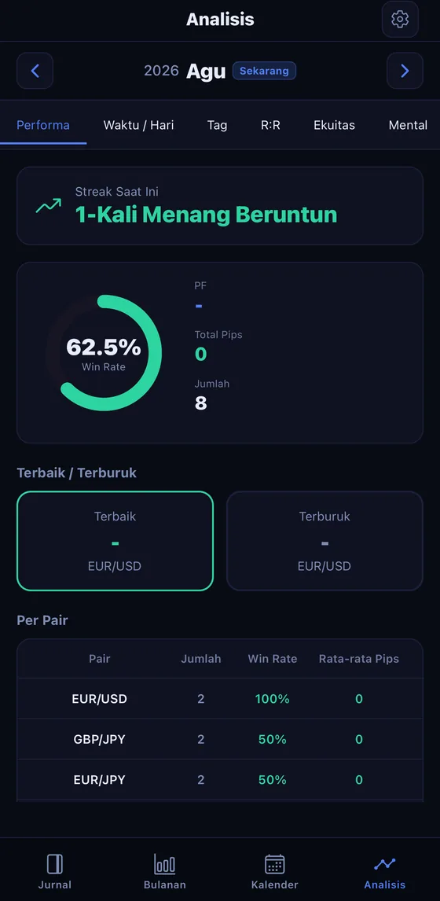
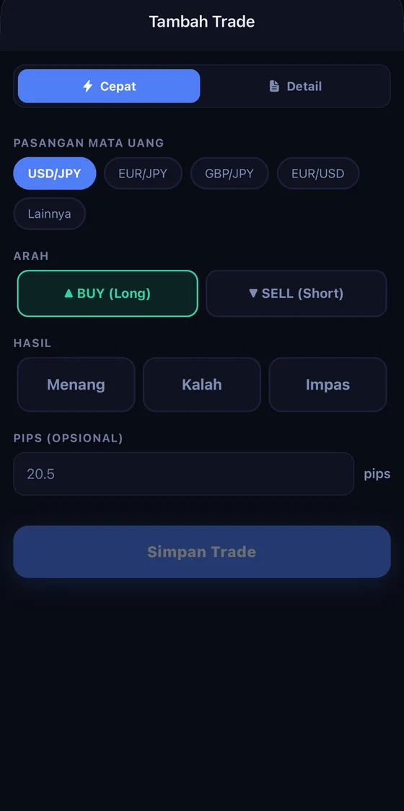

Tersedia di 16 negara dan wilayah, termasuk Jepang, Amerika Serikat, dan Swiss. Tidak tersedia di App Store di UE, EEA, atau Inggris.
Contoh pasangan mata uang. Bukan data pasar sebenarnya.
Pasangan yang didukung (sebagian): USD/JPY, EUR/JPY, GBP/JPY, EUR/USD, AUD/JPY, USD/CHF, NZD/USD, GBP/USD dan lainnya
Aplikasi jurnal trading & analitik
Cukup catat satu transaksi, dan win rate, pips, serta profit factor Anda langsung muncul otomatis. Hasil Anda menjadi kartu yang bisa dibagikan untuk menjaga motivasi. Semuanya berjalan di ponsel atau tablet Anda.
Tampilan contoh. Bukan hasil trading sebenarnya.

Tampilan contoh. Bukan hasil trading sebenarnya.
Mengapa kebiasaan mencatat tidak bertahan
Justru tepat setelah transaksi yang merugi, keinginan untuk mencatatnya langsung menghilang. Buku catatan atau spreadsheet yang butuh usaha untuk diisi pun berhenti tepat di momen itu.
FX Trade Journal menghilangkan alasan "terlalu ribet untuk dicatat" lewat pencatatan satu ketuk dan impor riwayat transaksi MT4/MT5. Analisis baru benar-benar bermakna ketika Anda konsisten menjaga rentetan catatan Anda.
Fitur

Tampilan contoh. Bukan hasil trading sebenarnya.
Cukup dengan mencatat transaksi, win rate, pips, dan profit factor bulanan Anda terhitung otomatis. Lihat pola berdasarkan jam, hari dalam seminggu, dan pasangan mata uang sekilas pandang.
Ubah hasil bulanan Anda menjadi kartu yang menarik dan bagikan di X, Instagram, atau LINE. Melihat progres Anda terus bertambah menjadi bahan bakar untuk terus melangkah.

Saat di perjalanan atau tepat setelah menutup transaksi — cukup satu ketukan, sehingga Anda bisa mencatat jurnal trading hanya dengan ponsel atau tablet.
Riwayat trading FX adalah data sensitif yang bisa mengungkap kondisi keuangan Anda. Karena itu, enkripsi dan kunci biometrik sudah menjadi standar.
Tampilan contoh. Bukan hasil trading sebenarnya.
Cukup letakkan di Layar Utama, dan bulan berjalan selalu terlihat. Angka yang terlihat menjadi alasan untuk terus mencatat.
Harga
Untuk membangun kebiasaan mencatat. Fitur inti tetap gratis selamanya.
Gratis
Untuk trader yang ingin mengevaluasi performanya secara serius.
Harga yang ditampilkan berlaku untuk Jepang (JPY, sudah termasuk pajak). Harga yang tertera di App Store dapat berbeda tergantung negara/wilayah. Jika Anda membatalkan selama masa uji coba gratis 7 hari pada paket tahunan, Anda tidak akan dikenakan biaya. Setelah masa uji coba berakhir, Anda akan otomatis dikenakan biaya untuk paket tahunan (JPY 5,000). Langganan diperpanjang otomatis dan dapat dibatalkan melalui aplikasi Pengaturan di perangkat Anda hingga 24 jam sebelum akhir periode berjalan. Lihat Ketentuan Layanan dan Kebijakan Privasi kami untuk detailnya.
FAQ
Mulai evaluasi hari ini, dari transaksi Anda berikutnya.